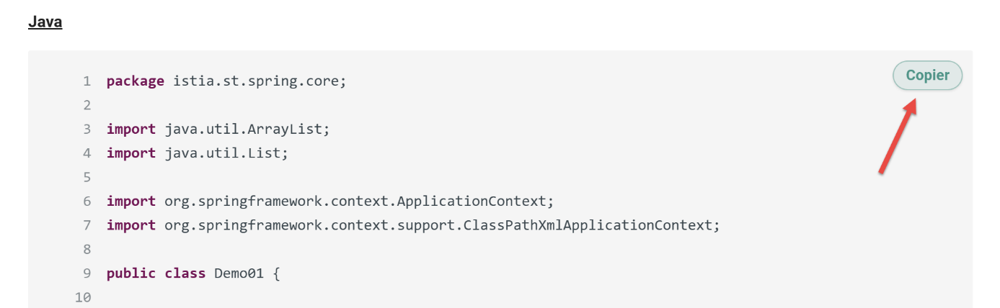

7. The converters’ configuration file
The configuration file [config*.py] contains the information that can vary from one document to another. It begins as follows:
config = {
# -------------------------------------------------------------------------
# MkDocs configuration
# -------------------------------------------------------------------------
"mkdocs": {
# Site title that will appear in the browser tab
"site_name": "Convert a Word or ODT document to a static HTML site using Gemini 3 AI",
# Site publication URL (e.g., GitHub Pages)
"site_url": "https://stahe.github.io/word-odt-vers-html-janv-2026/",
# Meta description for search engine optimization (SEO)
"site_description": "Convert a Word or ODT document to a static HTML site using Gemini 3 AI",
# Site author
"site_author": "Serge Tahé",
# Link to the source code repository (GitHub icon in the top right corner)
"repo_url": "https://stahe.github.io/word-odt-vers-html-janv-2026",
"repo_name": "GitHub",
- line 1: the configuration file is a Python script. It defines a single variable [config]. This is a dictionary that will contain all the configuration values;
- line 5: the [mkdocs] dictionary configures the [mkdocs.yml] file generated by the Gemini/ChatGPT converter. This file is then used by the [build] script to build an HTML site from the MkDocs site generated by the converter;
- Lines 5–20: configure the GitHub site that will host the HTML site created from the ODT/DOCX document (see paragraph 12)
The [config.py] configuration file continues as follows:
# Important: set to False so that links work correctly on GitHub Pages
# (prevents links like folder/ instead of folder/index.html)
"use_directory_urls": False,
# Configuration of the Material theme for MkDocs
"theme": {
"name": "material",
# Directory containing overrides (custom footer, etc.)
"custom_dir": "overrides",
# Enabled navigation features
"features": [
"navigation.sections", # Groups sections in the menu
"navigation.indexes", # Allows clicking on the section title
"navigation.expand", # Opens menus by default
"toc.integrate", # Integrates the table of contents on the left (if supported)
"navigation.top" # "Back to top" button
],
# Color palette (Light Mode / Dark Mode)
"palette": [
{
"media": "(prefers-color-scheme: light)",
"scheme": "default",
"primary": "teal",
"accent": "purple",
"toggle": {
"icon": "material/brightness-7",
"name": "Switch to dark mode"
}
},
{
"media": "(prefers-color-scheme: dark)",
"scheme": "slate",
"primary": "teal",
"accent": "purple",
"toggle": {
"icon": "material/brightness-4",
"name": "Switch to light mode"
}
}
]
},
- line 23: this line is important. If it is missing, instead of displaying an HTML page, the browser will open the folder containing that page;
- line 26: MkDocs offers several themes for a MkDocs/HTML site. Here we have chosen the “material” theme, line 27;
- lines 31–38: configuration of site navigation. This will be done using a table of contents located in the left column of the displayed page (line 36);
- lines 40–63: define two color palettes: light mode (lines 43–49) or dark mode (lines 52–61). An icon in the top bar of the displayed pages allows you to switch between them;
The rest of the configuration file is as follows:
# Markdown extensions used to enrich the content
"markdown_extensions": [
"admonition", # Warning/info blocks
"attr_list", # Custom CSS attributes {: .class }
"pymdownx.superfences", # Advanced code blocks
"pymdownx.mark", # Highlighting ==text==
{
"pymdownx.highlight": {
"anchor_linenums": True,
"linenums": None # Line numbers are managed dynamically by the script
}
},
"md_in_html", # Allows Markdown within HTML tags (crucial for lists and tables)
"footnotes" # Footnotes [^1]
],
- lines 64–78: extensions to the Markdown language used by MkDocs. These extensions were generated by Gemini following some of my requests;
The rest of the configuration file is as follows:
# Additional scripts and CSS
"extra_javascript": [
"javascripts/focus.js" # Script for "Focus" mode (full screen)
],
"extra_css": [
"stylesheets/focus.css"
]
},
- line 81: the [focus.js] script is a JavaScript script generated by Gemini. It is associated with the button on the site's top bar to show or hide the table of contents;
- line 84: the CSS used by this button;
The rest of the configuration file is as follows:
# -------------------------------------------------------------------------
# Footer
# -------------------------------------------------------------------------
"footer": (
"{% block footer %}\n"
" <div class=\"md-footer-meta md-typeset\">\n"
" <div class=\"md-footer-meta__inner\">\n\n"
" \n"
" <a href=\"https://tahe.developpez.com\" target=\"_blank\">\n"
" https://tahe.developpez.com\n"
" ">\n"
" \n"
" This tutorial, written by Serge Tahé, is made available to the public under the terms of the\n"
" Creative Commons Attribution-NonCommercial-\n"
" ShareAlike 3.0 Unported License>."
" \n\n"
" \n"
" "
"{% endblock %}"
),
- lines 87–106: the definition of the HTML site footer. This was generated by Gemini based on a sample text I provided;
The rest of the configuration file is as follows:
# -------------------------------------------------------------------------
# Additional configuration (Analytics, etc.)
# -------------------------------------------------------------------------
"extra": {
"analytics": {
"provider": "google",
"property": "G-XXXXXXXX"
}
},
# -------------------------------------------------------------------------
# Document Title Detection
# -------------------------------------------------------------------------
"document_title": {
# ODT styles to be considered as the main document title (global H1)
"style_names": [
"P1"
],
# CSS applied to this heading in the generated Markdown
"css": "font-size: 28px; font-weight: bold; margin-bottom: 1em; line-height: 1.2; color: #2c3e50;"
},
- lines 110–115: definition of the Google Analytics (GA) tag that will track site visits;
- line 113: insert your GA tag here;
- lines 120-127: the style of the document title, the one present in the ODT/DOCX document before the first level 1 heading. The style specified on line 123 changes with each ODT document. However, it can be constant (“Title”) for DOCX documents. By default, the converter logs the styles of all paragraphs in the ODT/DOCX document preceding the first Level 1 heading. You must therefore run the converter once, identify the style of the paragraph you want to use as the title, and then set that style on line 123;
- line 126: the CSS style you want to apply to the document title. This title appears on the “Home” page, the first page displayed when the site opens;
The rest of the configuration file is as follows:
# -------------------------------------------------------------------------
# Source Code Management
# -------------------------------------------------------------------------
"code": {
# Keyword in the ODT style to identify a code block
"style_keywords": [
"code"
],
# Default language if no detection works
"default_language": "text",
# Visual style of rich text (bold/italic/color preserved from ODT)
"rich_line_height": "20px",
"rich_font_family": "Consolas, 'Courier New', monospace",
"rich_font_size": "15px",
# Rules for automatic language detection based on content
"detection_rules": {
"csharp": [
"using", "Console.WriteLine", "public static void Main", "WebMethod",
"TryParse", "EventArgs", "String.Format", "System.Web.Services"
],
"java": [
"System.out.println", "public static void main(String", "package",
"JUnitTest", "Class.forName", "PreparedStatement", "private static void",
"private void", "getAgendaMedecinJour", "@PostConstruct", "@ResponseBody",
"@RequestMapping", "getDoctor", "@Entity", "@Autowired", "@Bean",
"Serializable", "getClient", "getTimeSlot", "getAppointment", "PostAddAppointment",
"PostDeleteAppointment", "@EnableJpaRepositories", "@Component", "getDoctorScheduleToday",
"getResponse", "getMessagesForException", "getBase64", "addAppointment",
"Response", "getPartialViewAgenda", "setModelForAgenda", "ActionContext",
"getActionContext", "PostLang", "PostUser", "PostGetAgenda", "@NotNull",
"@EnableAutoConfiguration", "HttpSecurity"
],
"html": [
"<html>", "", "<body>", "<script>", "href=", "<span>", "<html>",
"", "<form", "<table", "<input"
],
"sql": [
"SELECT", "INSERT INTO", "UPDATE", "DELETE FROM", "WHERE",
"CREATE TABLE", "ALTER TABLE"
],
"python": [
"def", "import", "print(", "from"
],
"xml": [
"<?xml", "<project", "<version>", "<configuration>", "<build>",
"<dependency>", "<properties>", "<configuration>", "<start-class>"
],
"javascript": [
"use strict", "console.log", "let", "constructor", "async", "export"
],
"php": [
"<?php", "declare", "require"
],
"vbscript": [
"Option", "Dim", "Explicit"
]
}
},
- lines 128–187: This configuration is used for "plain text" code that does not initially have syntax highlighting. These lines are intended to apply syntax highlighting based on the language used in the code block. Note that if all your code is already formatted because it comes from an IDE such as Eclipse, Visual Studio, etc., and you do not have any "plain text" code blocks associated with a language, then you do not need to enter anything in this section of the configuration. You can leave the tables associated with the languages blank.
- Lines 133–135: Code blocks are identified by their styles in the ODT/DOCX document. There may be several. On line 134, list all the keywords that allow a code style to be detected. In my documents, all my code styles have the word “code” in their names. And no other styles have this word in their names. So I can simply enter a single keyword. If there are several, separate them with commas on line 134;
- Lines 145–187: the strings that identify the language of a code block. Some keywords may appear in multiple languages. The converter selects the language for which it found the most keywords. The principle is simple: you look at your code, select characteristic keywords, and enter them in these lines for the correct language. Note that you cannot enter just anything as a language name: you must use the names recognized by MkDocs;
- lines 139–142: these lines concern formatted code blocks (bold, italics, underlining, highlighting, character color). These blocks are not processed like “plain text” code blocks. They are rendered exactly as written in the HTML;
- line 140: sets the line height for code lines;
- Line 141: Sets the CSS font for the code block;
- line 142: sets the font size;
- line 137: sets the default language. In the case of a "plain text" code block, if no language is detected, the default language will be "text." For MkDocs, this means a code block without syntax highlighting. This is the case, for example, with execution results;
The configuration ends as follows:
# -------------------------------------------------------------------------
# Static files to copy to the site root
# -------------------------------------------------------------------------
"files_to_copy": [
"googleXXXXXX.html",
"robots.txt",
"word-odt-to-html-jan-2026.pdf"
],
# Debug mode: displays the styles encountered before the first heading
"debug": True
}
- lines 191–195: the list of files to copy to the root of the HTML site;
- lines 192–193: the site’s Google Analytics tag and the [robots.txt] file that allows search engines to crawl the site;
- line 194: the PDF of this document made available for download;
- line 198: [debug] set to True enables logging of the styles of the paragraphs preceding the first Level 1 heading in the ODT/DOCX document. It is in these logs that we will find the exact style of the paragraph to be used as the title on the site’s homepage;
Ultimately, when switching from one ODT/DOCX document to another, you will need to modify lines [6-20, 127-129, 201] and certain lines in the language key strings. The rest remains unchanged.
Other elements have been added to the configuration file in the latest versions of the converter:
[Copy] button
On rich text code blocks as well as on “plain text” code blocks containing a recognized language, there is a [Copy] button:
 |
This button allows you to copy the code block to the clipboard. Line numbers are not included. The behavior of this button is controlled by the following lines in the [config.py] configuration file:
# ---------------------------------------------------------------------
# [Copy] button in code blocks (copies to the clipboard)
# ---------------------------------------------------------------------
# Enables/disables the [Copy] button (True = enabled)
"copy_button": True,
# Button label before copying
"copy_label": "Copy",
# Temporary label after a successful copy
"copy_copied_label": "Copied",
# If True, the button only appears if the block's language is "recognized"
# (e.g., language-java / language-python, etc.)
"copy_only_recognized_language": True,
# Minimum number of lines to display the button:
# - 0 => no threshold (all "recognized language" blocks will have the button)
# - >0 => the block must have at least this number of lines
"copy_min_lines": 0,
# If True, the button is also allowed on "colored" Pygments blocks
# even if the language-xxx class is not explicitly present.
# Useful for certain code renderings (highlighttable) where coloring exists
# but the language does not appear in a CSS class.
"copy_allow_pygments_heuristic": True,
# Appearance of the [Copy] button (inline CSS: only declarations,
# without curly braces). Allows for easy customization of the look.
# ---------------------------------------------------------------------
# "Material-like" style for the [Copy] button
# (inline CSS: declarations only, no curly braces)
# ---------------------------------------------------------------------
"copy_style": {
# Code block container: required to position the button
"container": "position: relative;",
# Normal button style
"btn": (
"position:absolute; top:.5rem; right:.5rem; "
"display:inline-flex; align-items:center; justify-content:center; "
"gap: .35rem; "
"padding: 0.25rem 0.6rem; "
"font-size: .72rem; font-weight: 600; letter-spacing: .01em; "
"line-height: 1.2; "
"border-radius:999px; "
"border: 1px solid rgba(0,150,136,0.45); "
"background: rgba(0, 150, 136, 0.12); "
"color:rgb(0,150,136); "
"box-shadow: 0 1px 2px rgba(0,0,0,.10); "
"backdrop-filter:saturate(180%) blur(6px); "
"cursor:pointer; user-select:none; "
"transition:transform .08s ease, box-shadow .12s ease, background .12s ease;"
"z-index:5;"
),
# Hover: slightly "raised" (like Material)
"btn_hover": (
"background:rgba(0,150,136,.20); "
"box-shadow:0 3px 10px rgba(0,0,0,.18); "
"transform:translateY(-1px);"
),
# "Copied" state: slight fade
"btn_copied": "opacity:.85;"
},
Images
Similarly, the behavior of clickable images is controlled by the following lines in the configuration file:
# -------------------------------------------------------------------------
# Images: shadow settings (zoom / lightbox)
# -------------------------------------------------------------------------
"images": {
"shadow": {
# Enables/disables the shadow around images
"enabled": True,
# Radius applied to image corners (e.g., "0px", "4px", "8px", ...)
"border_radius": "8px",
# Default shadow on "zoomable" images
"zoomable": "0 8px 24px rgba(0,0,0,.28), 0 18px 60px rgba(0,0,0,.20)",
# Hover shadow on "zoomable" images
"zoomable_hover": "0 12px 30px rgba(0,0,0,.32), 0 26px 80px rgba(0,0,0,.22)",
# Shadow when the image is displayed in full size (lightbox)
"lightbox": "0 24px 80px rgba(0,0,0,.65)",
}
},
Language recognition for unformatted code blocks has been improved. In [config.py], the following lines have been added to the [code] dictionary:
"code": {
# case-insensitive languages
"case_insensitive_languages": [
"sql", "html", "vbnet", "vbscript"
],
- Lines 3–6 specify case-insensitive languages (upper/lowercase). Therefore, in the key expressions associated with the HTML language, there is no need to include both <body> and <BODY>, as both are valid HTML tags. The <body> tag is sufficient.